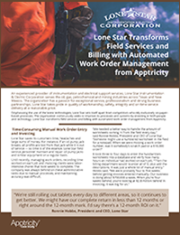

Case Studies
TD Auto Finance Transforms Expense Management with an Automated Travel and Expense System from ApptricityApptricity Travel & Expense Management A prominent U.S. auto financing organization, TD Auto Finance® is one of the world’s top online financial services firms. The company provides a variety of automotive financing options to both car buyers and dealers and has about 7 million online customers. TD Auto Finance is part of Toronto-Dominion Bank. The bank and its subsidiaries are collectively known as TD Bank Group®, which is North America’s sixth-largest bank. It boasts 19 million customers across four businesses. |
|
National Travel Partners with Apptricity Delivering Automated Travel and Expense for the U.S. Government SectorApptricity Travel & Expense Management National Travel, one of the top-ranking travel management companies in the United States, was faced with a significant challenge when a large scale government client needed expense management capabilities. Accustomed to highly complex travel policies, National Travel prides itself on customer service excellence. The organization’s customers include individuals, small businesses, corporate VIPs and government agencies. However, the firm had to extend its services dramatically to meet the request made by this influential government client. |
|
Major Aerospace, Technology and Global Security Company Automates Asset ManagementApptricity Asset Management Automation eliminates the pain of inefficient, labor-intensive, error-prone manual processes for large and small organizations alike. When one of the world’s leading aerospace, technology and global security companies found that manual asset tracking was consuming excessive amounts of time and resources, the organization chose to seek out an automated solution. |
|
|  |
Lone Star Transforms Field Services and Billing with Automated Work Order Management from ApptricityApptricity Work Order Management An experienced provider of instrumentation and electrical support services, Lone Star Instrumentation & Electric Corporation serves the oil, gas, petrochemical and mining industries across Texas and New Mexico. The organization has a passion for exceptional service, professionalism and strong business partnerships. Lone Star takes pride in quality of workmanship, safety, integrity and on-time service delivery at a reasonable price. |